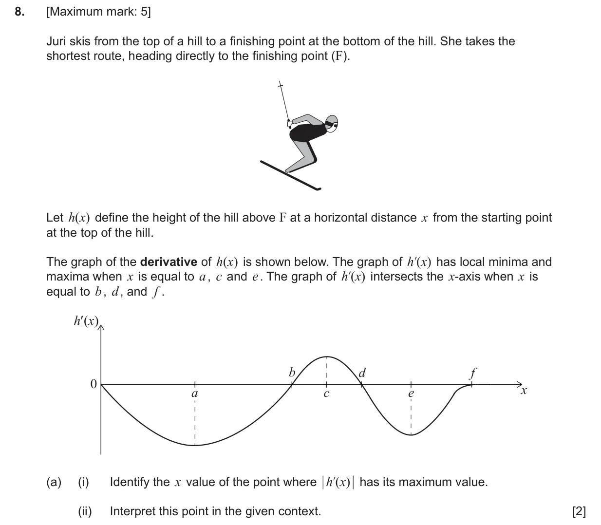
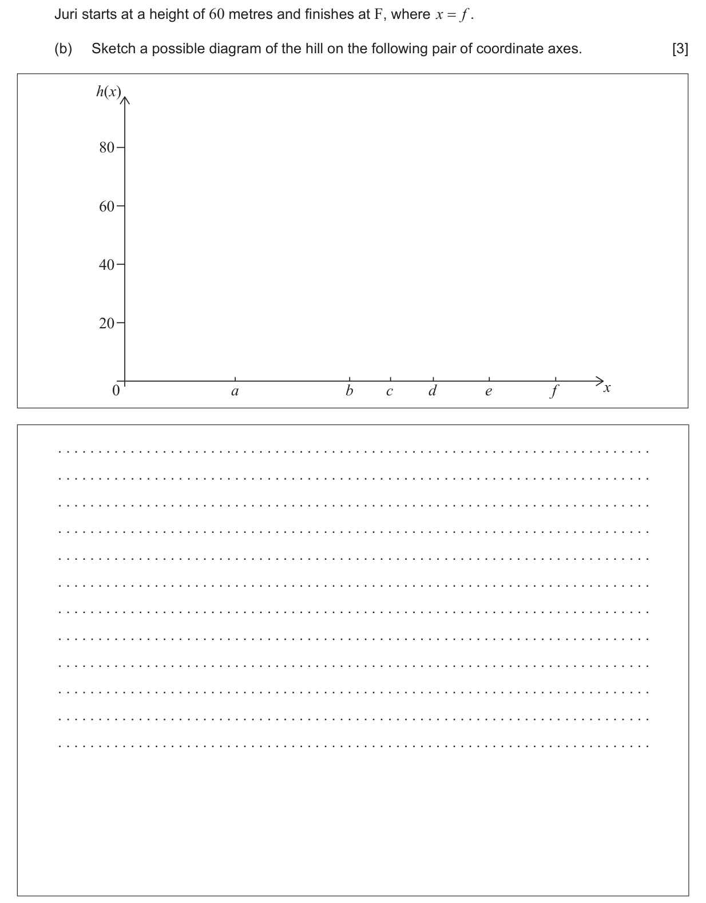
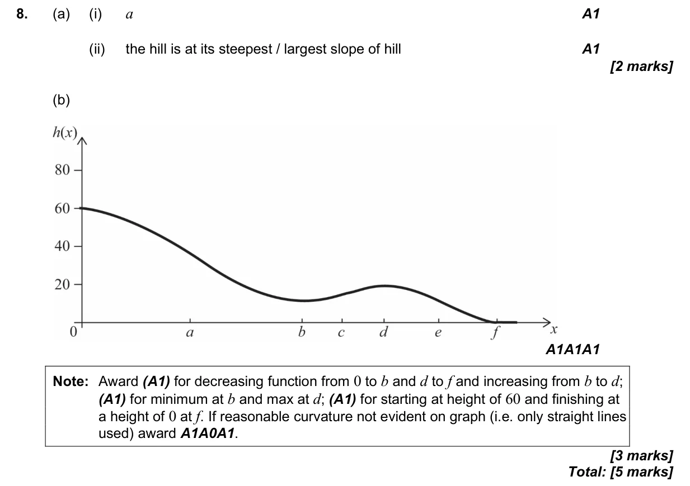

5 marks P1 TZ0 Calculator 5.10 The second derivative and the second derivative test5.2 Increasing and decreasing functions5.6 Stationary points: local maxima and minima2.3 Graphs of functions Question Hide breakdown ab Markscheme 